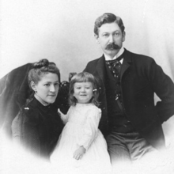

Howard Phillips Lovecraft nacío el 20 de agosto de 1890 nació en Providence, Estados Unidos. Él era superdotado, se dice que a los 2 años empezó a leer, alos 6 a escribir y a los 15 escribío su primera novéla: "La bestia en la cueva"
Su vida fue marcada por el fallecimiento de su padre cuando era pequeño en un centro psiquiátrico, la mala relación con su madre y el posterior fallecimiento de su abuelo materno,el cual fue una figura fundamental para Lovecraft debido que solian ir a la biblioteca a leer novelas. Esto hizo que Lovecraft se intentara suicidar y que crease un mundo a parte oara poder evadirse de la realidad

En esta foto podemos ver a Lovecraft vestido de niña, esto fue muy común en su vida, su madre siempre había deseado una niña, fue acumulando ropa y ropa de niña y vestía a Lovecraft como si fuera una niña.